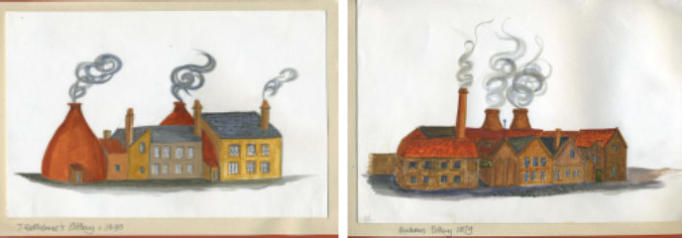
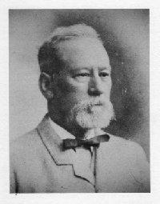

Portobello Pottery
Portobello was one of the main centres of industrial ceramic production in Scotland, dating back to the 1770s or thereby. The range of wares made at Portobello, spanning two centuries, covered much of the ceramic spectrum. Activity occurred at several sites, clustered around the mouth of the Figgate Burn where it enters the Firth of Forth. A number of well- known names emerged, of which two stand out – Thomas Rathbone, celebrated for his fine painted and printed earthenware, and Alexander Buchan, famed far and wide for his utilitarian stoneware. From the 1830s this latter class of ware had been produced by a succession of firms: Cornwall Brothers, Milne & Cornwall, Milne & Smith, Thomas & Robert Tough, Thomas Tough, Murray & Buchan, starting in 1867, and finally A. W. Buchan & Co (1878-1972).

These sketches by Alison Robinson are based on contemporary prints and show Thomas Rathbone's pottery about 1845, left, and the Buchan pottery about 1879, right.”
The rise of Alexander Buchan to the fore heralded a sixty-year period during which vast quantities of stoneware goods of all descriptions were manufactured. The firm was inventive too, securing a number of patents and registering several novel designs, and time was even found to dabble in the world of art pottery with their exotic but misnamed Portobello Faience.

Their near neighbours, W. A. Gray & Sons of the Midlothian Pottery, produced almost identical utilitarian stoneware, if not quite so extensive in its range. They were famed for their patented white marmalade jars. Meanwhile, at the other site, production was continued by a number of close Buchan family members until this phase came to an end at the time of the Second World War, dictated by a variety of changing circumstances. However, having been one of the few Scottish potteries to have survived the Depression, A.W Buchan & Co was not about to slide into closure. Instead, the manufacture of utilitarian stoneware was all but given up and replaced with a product of a quite different character - decorative stoneware.
Initially of a single uniform colour, a range of multi- coloured patterns developed under the guidance of Eric McKinnon Buchan. About a dozen of these were given names, but the total number ran into three figures. Favourite above all proved to be the Thistle pattern (never officially named) comprising a semi-stylised grouping featuring a thistle, heather, and bluebells, all on a sky blue background. This was hugely popular both at home and overseas, and was in great demand from countries with large populations of expatriate Scots, which contributed to Buchan’s prosperity in the post-War period. The goods were known as Thistle ware from 1946, the cleverly designed thistle trade mark was registered in 1949, and the works were known as the Thistle Pottery from 1955 until its closure. When government economic policy brought about the demise of Buchan’s at Portobello in 1972, all seventeen girls in the decorating shop were painting the famous Thistle group.
This was not the end of A.W. Buchan & Co, for it relocated to Crieff, manufacture starting there even before it had ended at Portobello. It prospered, rather against the odds, still producing the Thistle and some other patterns until its sudden closure in 1999. Even then it was not totally finished, as a lone potter, Joe Hunter, and a single decorator, Karen Cramb, continue to keep the Buchan name alive. The famous Thistle mark has been re- registered, and Thistle ware, and some other lines, continue to be made.
Graeme Cruickshank
Portobello Pottery Gallery
In the pages of the Gallery you will find images of pottery made in Portobello during all the periods chronicled by Graeme Cruickshank, from early spongeware to the thistle ware that ultimately defined A W Buchan & Company.
References: Annals of Duddingston and Portobello (William Baird, 1898) is a readable and informative work and should be the first port of call for local historians wanting to find out about the early years of Portobello‘s industries. However, Baird rarely gives sources, can be vague on dates and does contain errors. Some of these mistakes have, unfortunately, been repeated by later writers.
A History of A. W. Buchan & Co. Ltd., Potters Portobello (Robin A Hill, 1997) is an excellent little book and very strong on the business side, the products and their markets. Robin Hill was Depute Curator at City Museums, Huntly House and had access to the Buchan business records deposited there when the company moved from Portobello
Scottish Pottery (Graeme Cruickshank (1987) Shire Publications.
A new edition of this book has been published. Graeme, also a former employee at Huntly House Museum, has written extensively on Scottish pottery, including Portobello, and many of his articles are listed in the comprehensive bibliography of works on Scottish pottery on the website of the Scottish Pottery Society.
Go to www.scottishpotterysociety.co.uk and follow the link to the books and publications page.